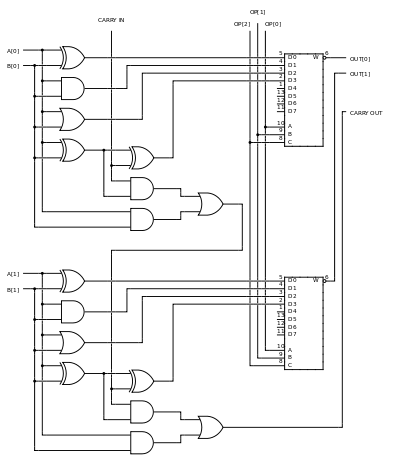

1.2.1.2 Unidad Aritmética Lógica
la unidad aritmética lógica o unidad aritmético-lógica, también conocida como ALU (siglas en inglés de arithmetic logic unit), es un circuito digital que realiza operaciones aritméticas (suma, resta) y operaciones lógicas (SI, Y, O, NO) entre los valores de los argumentos (uno o dos)
Por mucho, los circuitos electrónicos más complejos son los que están construidos dentro de los chips de microprocesadores modernos. Por lo tanto, estos procesadores tienen dentro de ellos un ALU muy complejo y potente. De hecho, un microprocesador moderno (y los mainframes) puede tener múltiples núcleos, cada núcleo con múltiples unidades de ejecución, cada una de ellas con múltiples ALU.
Muchos otros circuitos pueden contener en el interior una unidad aritmético lógica: unidades de procesamiento gráfico como las que están en las GPU modernas, FPU como el viejo coprocesador matemático 80387, y procesadores digitales de señales como los que se encuentran en tarjetas de sonido, lectoras de CD y los televisores de alta definición. Todos estos tienen en su interior varias ALU potentes y complejas.
En la imagen se detalla una ALU de 2 bits con dos entradas (operandos) llamadas A y B: A[0] y B[0] corresponden al bit menos significativo y A[1] y B[1] corresponden al bit más significativo.
Cada bit de la ALU se procesa de manera idéntica, con la excepción del direccionamiento del bit del acarreo. El manejo de este bit es explicado más adelante.
Las entradas A y B van hacia las cuatro puertas de la derecha, de arriba abajo, XOR, AND, OR. Las tres primeras puertas realizan las operaciones XOR, AND, y OR sobre los datos A y B. La última puerta XOR es la puerta inicial de un sumador completo.
El paso final de las operaciones sobre cada bit es la multiplexación de los datos. La entrada OP de 3 bits, OP[0], OP[1] y OP[2] (desde la unidad de control) determina cual de las funciones se van a realizar:
OP = 000 → XOR
OP = 001 → AND
OP = 010 → OR
OP = 011 → Adición
Claramente se ve que las otras cuatro entradas del multiplexor están libres para otras operaciones (sustracción, multiplicación, división, NOT A, NOT B, etc). Aunque OP[2] actualmente no es usada en este montaje (a pesar de estar incluida y conectada), ésta sería usada en el momento de realizar otras operaciones además de las 4 operaciones listadas arriba.
Los datos de acarreo de entrada y acarreo de salida, llamados flags (banderas), son típicamente conectados a algún tipo de registro de estado.
